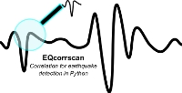

EQcorrscan 
0.1
1. Introduction to the EQcorrscan package
2. What’s new
3. EQcorrscan tutorial
3.1. Template creation
3.2. Matched-filter detection
3.3. Lag time calculation and pick correction
3.4. Magnitude calculation
3.5. Clustering and stacking
4. Core
5. Utils
EQcorrscan
Docs
»
3. EQcorrscan tutorial
»
3.3. Lag time calculation and pick correction
View page source
3.3. Lag time calculation and pick correction
¶
To be completed